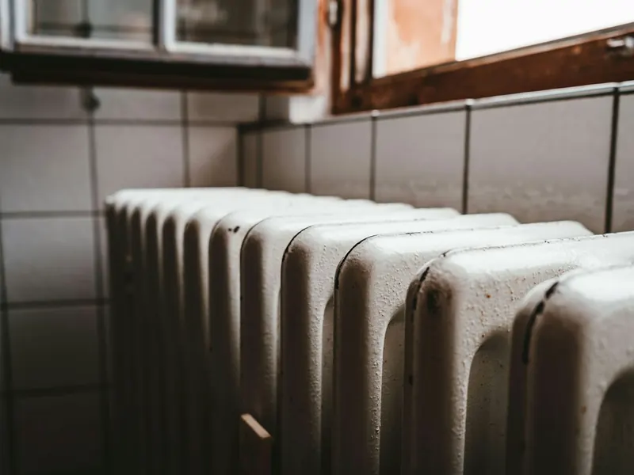

Утепление дома, рассчитанное на −50 °C
Где дом теряет больше всего тепла и на чём нельзя экономить при строительстве в Якутии.

Куда уходит тепло
Зимой разница температур между домом и улицей в Якутии может превышать 70 градусов. При таком перепаде любая щель или тонкое место в утеплении становится заметной утечкой тепла. Больше всего тепла теряется через кровлю, окна, пол над подпольем и узлы примыкания — места, где стена встречается с перекрытием, окном или фундаментом.
Что важно
Утеплитель в стенах, кровле и полу подбирают по теплотехническому расчёту для климатической зоны, а не «на глаз». Окна — с многокамерным стеклопакетом и тёплым монтажом. Пол над проветриваемым подпольем утепляют не хуже кровли: снизу его постоянно обдувает морозный воздух.
Отдельное внимание — пароизоляции. Тёплый влажный воздух из дома не должен попадать в утеплитель, иначе влага замёрзнет внутри стены и утеплитель перестанет работать.
Вентиляция
Плотный тёплый дом без вентиляции быстро становится душным и сырым. Чтобы не выпускать тепло через открытые форточки, ставят приточно-вытяжную вентиляцию с рекуперацией: уходящий воздух подогревает входящий.
Сколько будет стоить ваш дом?
Сравните материалы и фундаменты в калькуляторе.